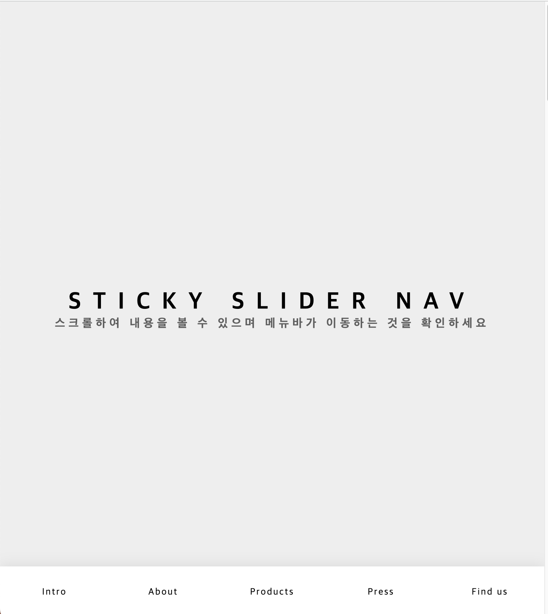
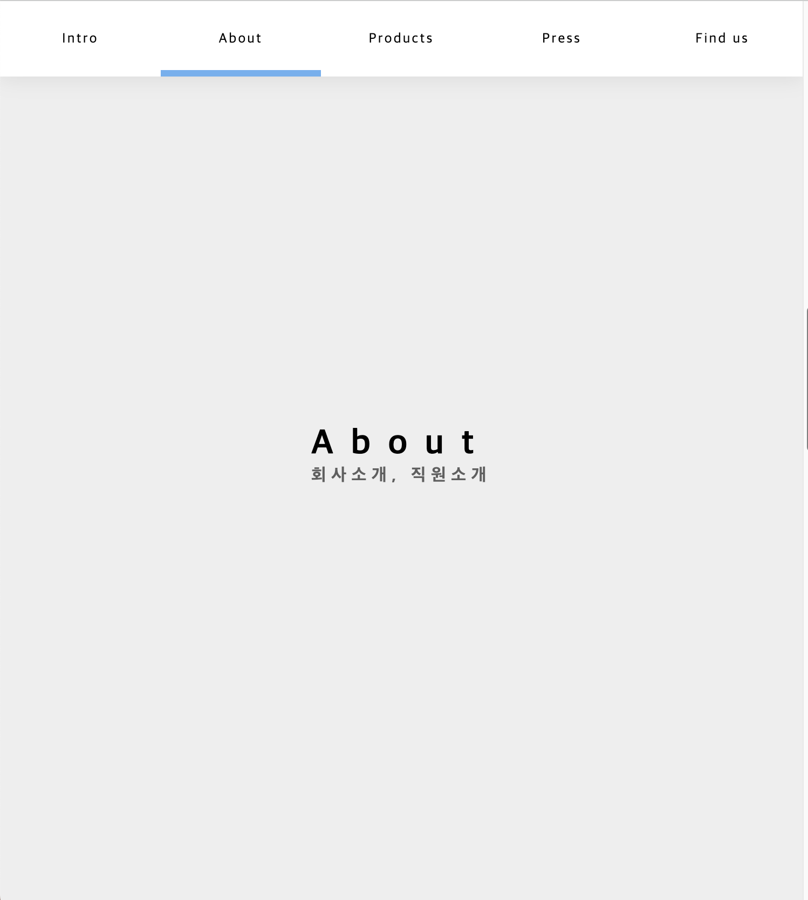

Code is Science
Introduction
코드에 정답은 없다. 정답이 1개일 필요도 없다.
동일한 결과를 얻기위해 여러가지 길을 제시해 봅니다. 같은 효과를 위해 다양한 방법으로 접근해 봅니다
이 사이트는 실험적인 면을 가지고 있으며 이렇게 저렇게 바꿔서 다양한 방법을 시도해 봅니다
설명:
- 해당 페이지(index)는 스크롤을 위해 IntersectionObserver를 사용했다
- 아직 구상중...
해결1
[ Sticky Navi ]
class로 구현한 것을 jQuery로 바꿔보자
📆 2023.12.13(수)
- window load, scroll, resize에 반응하도록 했다
- 메뉴는 첫번째 페이지에서 하단에 위치하다가 2번째 페이지부터는 브라우저의상단에 위치하도록 했다
- 메뉴를 클릭했을 때 해당 section에 맞는 메뉴에 하단 표시자가 나타나도록 했다
- 스크롤했을때 각 section의 위치에 맞게 메뉴에 하단 표시자가 이동하도록 했다
- 브라우저의 창 크기가 변경될때 하단 표시자도 그 크기에 맞추도록 했다
- 현재 선택된 탭과 새로 클랙한 탭이 다를때만 하단 표시자가 이동하도록 한다(이렇게해야 하단 표시자가 필요없는 이동을 하지 않는다)
- 브라우저의 크기가 변하면 section의 크기는 다시 계산되어야 했다.
- body, html에 animation()에 시간을 주어서 부드럽게 이동하도록 했다
- 상하로 움질일때 다음 section이 뷰포트에 아주 조금만 들어와도 이미 메뉴의 하단 표시자는 이동하는 것을 방지하기 위해 scroll-snap-type를 이용했다.


해결2
[ 제목 ]
…
해결3
[ 제목 ]
…
해결4
[ 제목 ]
…
해결5
[ 제목 ]
…
해결6
[ 제목 ]
…
해결7
[ 제목 ]
…
해결8
[ 제목 ]
…
더 나은 Css
…
본에 충실해 보자(번역)<
…
Next.js
…